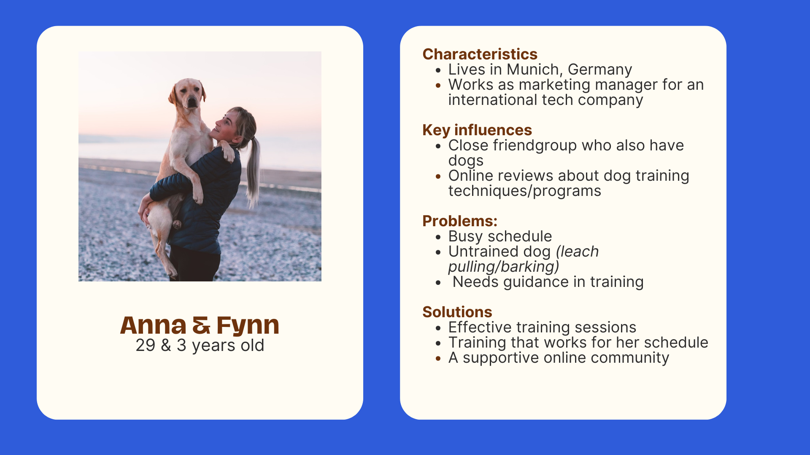
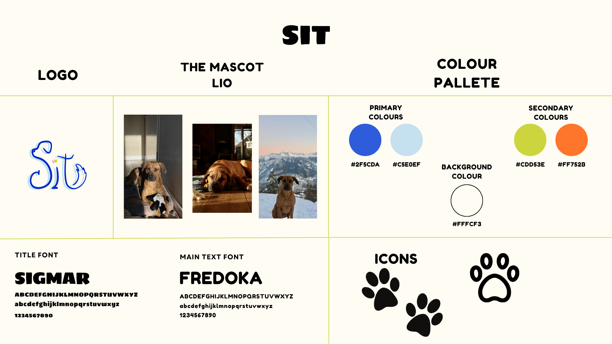
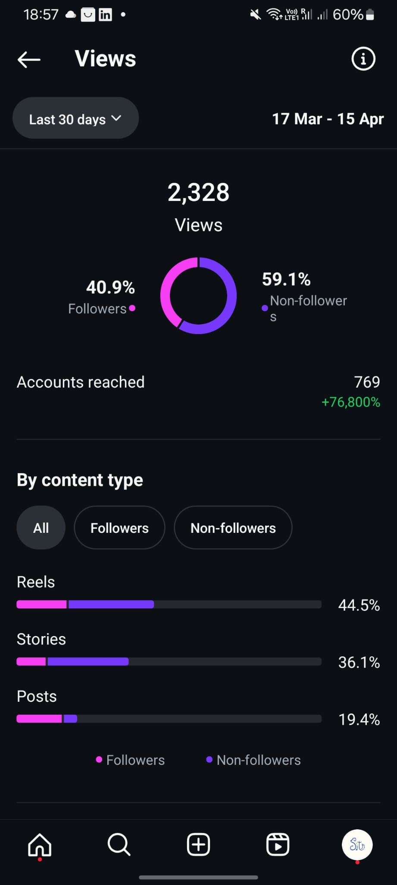
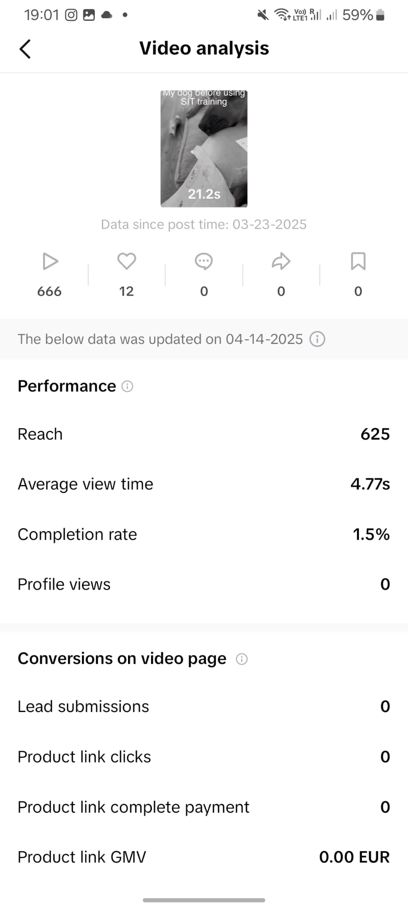
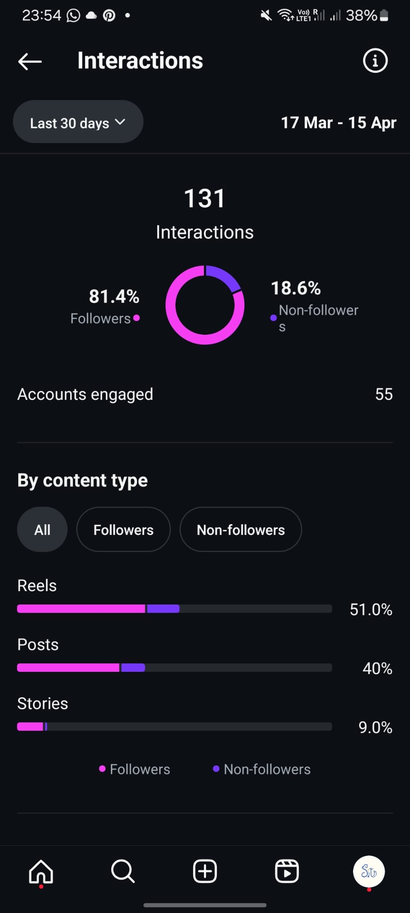
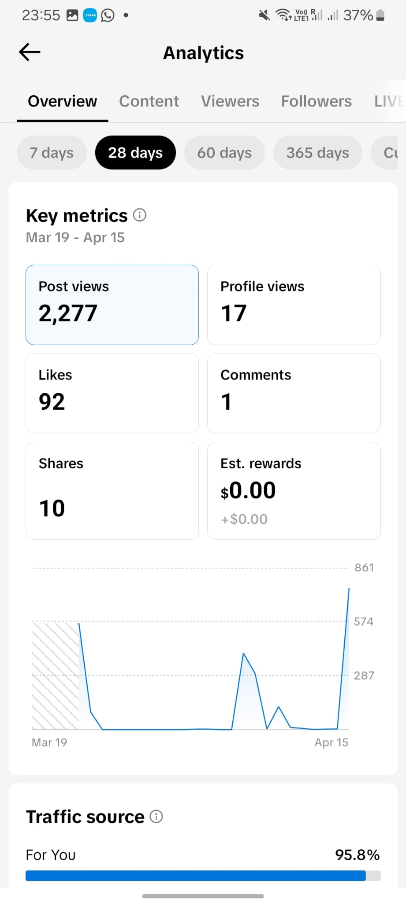
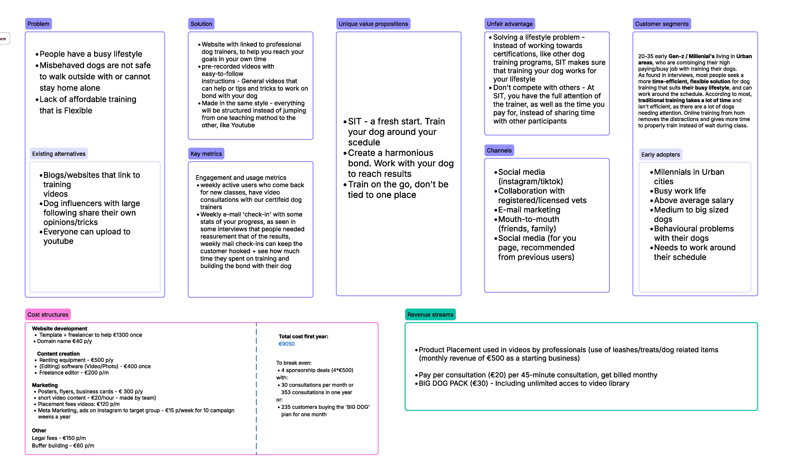

General Information
This branded website is publicly available at: Link to our final website published on GitHub Pages Link to our GitHub Repository
This website was created by:
- Milena Maksymiuk(ID: 231203)
- Maartje Kreijtz (ID: 225619)
- Lora Lichkova (ID: 230648)
- Isabela Chenhall (ID: 247252)
Content
Please clarify here the match between students and pieces of content. Make sure that you provide a link to the correct page within the website
Brand persona
Explanation of Brand name
The name of our brand is Sit. In a first glance it is a typical command dog owners use daily. However, it is more than that. The "S" in it is for STRIVE as we want to our users to strive for their goal of teaching their dogs more than just simple commands, but rather manners. The "I" in the name is for INSPIRE as we want to motivate dog owners to begging the process and become concistant in preserving the bond with their dog. Last, but not least the "T" is for TEACH which is our main purpose to help dog owners train their dogs.
Our brand logo justification
| # | Student ID | Value | Name and link of content |
|---|---|---|---|
| 1. | 231203 | Milena Maksymiuk | Main page |
| 2. | 225619 | Maartje Kreijtz | About us Lean Canvas |
| 3. | 230648 | Lora Lichkova | Corporate page, Instagram page, TikTok page |
| 4. | 247252 | Isabela Chenhall | Courses page |
Production
Style guide
Design Elements
We have provided you with a detailed style guide in the form of a picture and an extensive justification for the design elements used on the website.
-
-
Color choices
Orange (#FF752B) is linked to optimism and warmth which helps put the brand’s friendly nature at the forefront of our brand. This also helps tie in our original concept of using dichromatic colours to show what a dog’s sight is, however with a lightened and warmer twist. - #Dark blue (2F5CDA) Shades of bright and darker blue are often associated with dogs due to its links with loyalty and trust. This colour is bright and bold, helping to associate our brand with our customer basis. This is also good in contrast with the other colours because of its darker shade.
- Light blue (#C5E0EF) This blue further shows the brands links with loyalty, and with a lighter colour also brings in elements of new beginnings and tranquillity to represent the brand’s training values when working with aggressive dogs.
- Green(#CDD53E) Green tends to evoke fresh and natural feelings which further brings forward the idea of new beginnings and a fresh start for training. The more muted and warmer green is to compliment the other colours in the pallet.
- Beige (#FFFCF3) Adding to the darker blue’s contrast, the beige adds a lighter colour for our backgrounds and less bright pages, whilst also maintaining the warm theme of the other colours. Along with its simplicity, it’s widely thought to bring a sense of comfort, which is especially apparent between the mix of these colours.
-
-
Font choices
Heading 1
Heading 2
Heading 3
For the creation of this website we used two different fonts Sigmar and Fredoka. We chose to use the sans-serif font Sigmar for headings as it is bulkier and easier to read and playful. The font is easily readable making it faster for the website users to find the information they are looking for based on the heading. This font matches our playful aesthetic providing people with a warm felling towards the brand when used with our brand colors, especially the green. We used the sans-serif font Fredoka for the paragraphs and as a main font for the website. We chose it because it is easy to read in paragraphs.
- User interface patterns (e.g. grids, carousels, menu organizations etc.)
- The structure of the navigation and content (e.g. how content units are distributed across pages)
- All these elements must be justified by referring to the theory and/or vocabulary of design
- Please relate these elements to other units, for example:
- How does website design fit the values and personality of the brand?
- How does website design fit the marketing and communication strategy?
- How does website design help showcase the unique value proposal of the product?
Credits
Please provide links and/or credits for third-party elements including:
- HTML templates if these are different from this one (buas-media-interactive/prj4-group-template)
- The source code for UX patterns other than the ones provided by the “Bootstrap” library (see getbootstrap.com/docs for a list of such patterns)
- Images that were not produced by students themselves, including when crediting is not mandatory (in other words, we ask you to credit Unsplash images)
Testing Report
Please write about…
- Your testing goals – in other words, what you are trying to learn about your website?
- Your testing methods, which includes information about:
- The test’s participants (number, match with target audience, etc.)
- The test’s setting (which material is used, is it done remotely, on campus, at home, etc.)
- The test’s protocol (what instructions are given, how it is recorded, etc.)
- Your testing results, which includes information about:
- Positive and negative aspects of the UI/UX that have been identified, ranked by importance.
- Improvements that have been implemented on the final website (or that would be implemented if doing so would be too complex)
Marketing
Context of campaign and promotional activities
SIT dog training is an online platform providing people with accessible online training for big dogs. In the period between 19th of March and 16th of April we created and executed a creative marketing campaign. The campaign’s goal was to raise awareness to people about the existence of an easily accessible online dog training. We wanted to portray the brand as an understanding of the struggles dog owners face with disobedient pets and create a community around this struggle. SIT training offers people with various dog trainings focusing on obedience, and puppy training. We executed the campaign on Instagram and TikTok. We want people to see us not only as people who would help them with train their pet companions, but also like a friend that understands their struggles in taking care of a big dog.
For this marketing campaign we set up three different objectives. The first objective is to reach 1000 users by the 16th of April, measured through the accounts analytics. We want to reach 500 people on each platform. We will do this by posting regularly high quality visually appealing photos and videos of dogs who have behaved improperly. The reasoning behind this content types is to connect with the target audience on a deeper level and make them feel understood. Our second objective is to have at least 50content interactions weekly from our follower during the duration of the campaign, measured through account analytics such as . The content we would share on both platforms will be focused on making the target audience feel like there is a save space to communicate their struggles and reach out for help from our trainers. On TikTok we will post videos with trending sounds to showcase the playfulness of our trainers and some of the struggles. On Instagram we will share photos and videos of misbehaving dogs. Our third objective is to have 10% of our followers to feel supported and understood in the challenges they face with taking care of a big dog, measured through a poll on Instagram stories. The story will include a video of a destroyed pantry which is done by a dog. The question we will ask will be to see if they are also experiencing such troubles and to see if they feel understood. We want for our target audience to interact with the content we provide and in the end of the campaign to make them follow us and visit our website. We at SIT training want this campaign to showcase the friendly, helpful and joyful side of our brand and to inspire more big dog owners to sign up for a course.
During the campaign, we noticed that people interacted more with content where there was a dog rather than only people. This is why during the running time of our campaign we tried to post as much content as possible featuring our dog, Leo. The target audience found videos including Leo more interesting due to the relatable content we created with him.
For our first objective we observed that by the 16th of April we had achieved our goal as we managed to reach 769 account through our high visual posts and interesting and relatable videos. On TikTok, we had a reach of 625 people on our first post. Meaning, we had achieved our objective with the first post. However, the TikTok’s we uploaded did not so good as they only reached around 150 people each. We observed the difference in the posts such as the participants in the video itself and the hashtags used. In the first post we had a dog (Leo) and in the following ones it was just us doing trending challenges, which was not appealing to the target audience. In addition, we used #foryoupage for the first post which brought more people, and the second two posts did not have that hashtag which is a big part of the reason why we had reach fewer people in those posts.


For our second objective we wanted to have 150 interaction on Instagram and 50 on TikTok for the duration of the campaign. On TikTok we managed to have 78 like on our videos throughout the run time of our campaign and one person saved the video in their saves. For the Instagram in the same period we managed to have 131 interactions with all posts, reels and stories. We did not manage to achieve our objective in the specific number of interactions we wanted from each platform, but we have reached the set number of 200 interactions. During the campaign we could have changed the objective to a lesser amount of interactions on Instagram and a bigger number of interactions on TikTok, in order to successfully have achieved our objective.


For our third objective we wanted to make 10% of our followers feel supported and understood in the challenges they face with taking care of a big dog. We measured this through a story poll on Instagram asking them if they can leave their dogs home alone. We received 48 responses with 60% of them being “Yes” and 40% of them being “No”. You can see the story we posted below. With the caption we tried to make the connection between us and our struggling followers who have to take care of a reckless big dog which might destroy furniture and toys. We this poll we wanted to show dog owners that we understand them and we have experienced the same situation as them and are here to help.
Platforms
To execute our marketing communication campaign, we decided to use Instagram and TikTok. The tone of voice of our campaign is light and humorous and the target audience we have chosen is Millennials. The platforms we have chosen are TikTok and Instagram are two of the most used platforms by Millennials. We also found that this generation is using Instagram to connect with brands, and we want to promote our new online dog service platform and training courses through our profile. With our Instagram brand we wanted to connect with our target audience by showing them that we understand them and they can rely on us. We have posted posts (static, carousels , reels) and stories. We chose to use TikTok as 40% of Millennial TikTok users say that the platform helps them find new things and 1 in 2 views the platform as entertaining. On TikTok we wanted to both entertain and engage with our target audience. With did this by posting videos with trending sound and videos of us using viral sounds on the platform.
Learning Points
1 week
During the first week of our promotional campaign, we wanted to interact with the audience by sharing relatable content which will make them feel understood. We posted on both social media. On Instagram we posted a photo of a cute dog which had destroyed its toy and looked ashamed of the act. Later the same week we posted a reel on which we show the before SIT training and the after. Before posting the video as a reel on Instagram we posted as a TikTok. In the end of the week, we compared the interactions of the post. Each post was liked by 16 people.After we saw the few interactions on our posts we want to post more regurarly to get more engagment from our followers and reach more new followers.
2 week
In the second week, we posted mainly dog photos with funny captions. The content dogs doing things that they are not supposed to be doing such as sitting on a dining table. In this we could not film more videos with Leo for our TikTok. Our posts was viewed 77 times and we managed to reach 37 accounts . However, the interactions with the post were 17 likes, no comments, and no shares. We analyzed the content and concluded that we need to change the posting times and make them consistent.
3 week
In the third week, we continued posting only on Instagram. With the posts we wanted to raise awareness about our trainers and how the course work. We could not achieve our goal to post consistently during the week as we had busy schedules. Even though, we did not have time and posted only two times during the week each post received more than a hundred views. However, the interactions were around 15 per post. After this week, we decided to start posting video content as well as more stories. We wanted to try and get more people engaged with our posts.
4 week
In the fourth week of the campaign, we posted reels and stories to engage with our followers and attract new ones. On both platforms we posted the same videos. The videos contained viral TikTok challenges and sounds. On the stories we encouraged people to interact with our posts. We also did polls with our followers to interact with. In the last week, we had 1 607 view on Instagram, and had a reach 596 people. The interactions with our posts were 61 and the distribution was 69,9% reels, 15,1% posts, and 15,1% stories. 75,3% were from followers.
What we saw worked best on TikTok was using the hashtag #foryoupage under our posts as the first and last post received more views on the videos. Other posts on TikTok that did not have the same hashtag, but different ones did not earn high number of views. On Instagram we observed that people viewed more the reels than the regular posts or carousels. Meaning that short video content received more views. However, we found out that our posts were not that engaging to the audience due to the low number of interactions (likes, comments and shares). If we were to start the campaign again, we would focus more on the short video content where we would explain more about the brand and try to engage the customers more by asking them about their own stories about miss behaving dogs. Another thing we would do differently is post more stories to interact and make them act in connecting with our brand such as posting more polls or questionnaires. We would implement this as change due to the responses we received to the polls we shared on our stories related to the visual materials we provided for them. In addition, to promote the posts to our followers we will make a story announcing the new post and telling more about the content we have provided in the post. This short running campaign gave us the opportunity to learn more about how to interact with the target audience in a better way for future campaigns.
Future Planning
If this campaign were to continue in the future, we would implement some changes in regards of the posting and scheduling of the content. On Instagram we would try to focus on more cohesive looking posts for static ones and posting more short video content. In the begging of the campaign, we were still refining our brand colors and would have made it easier for the run of the campaign if we could post more content using the brand identity and presenting ourselves as a well-established brand not only post pictures. In regards of the short video content, we filmed more videos of us interacting with a dog and asking them to follow our commands and those of their owners to show case that training a dog creates a bond between owners and the companions themselves. On TikTok, we would change our approach from posting viral content to posting more narrower content interesting for the dog owners. Such as using popular sounds in the dog owner community on the platform. Dog owners on TikTok have their community where they already share their struggles and support one another. We want to intergrade ourselves as part of the community. Our brand is more than just online training, it is a friend that owners can rely on. More attention should be paid to specific hashtags, sounds and keywords when targeting our audience. As we are aiming for our target audience to find about our brand mainly through social media and the fact that younger generations find information on it. As we mentioned Millennials mainly rely on Instagram to find and connect with brands and use TikTok to find new things including brands.
Professionalism
In this part of the corporate page we have uploaded all posted content from our marketing campaign in order of posting and platform which the have been posted on. Here we provide links to the Instagram and TikTok accounts.Each post has been added as link as well.

Management
Lean Canvas 5
Fill in at least 2 bullet points per building block and according to the rubrics.
Problem
- List your top 3 problems you solve for your target group(s).
- Describe briefly how the problems are solved now (existing alternatives).
Solution
- Outline the brand solution(s) you have for the above problem(s).
Customer segments
- List your target customers and/or users.
- Describe briefly the characteristics of your ideal customer (early adopter, brand persona).
Unique value proposition
- With a single, clear compelling message, state why your brand idea is different and worth paying attention to.
Unfair advantage
- List the aspect(s) of your brand that cannot easily be copied, also called your sustainable competitive advantage(s).
Channels
- List your main path to customers.
- How do you reach them? What channel(s) do you use.
Key metrics
- List the key numbers that tell you how your brand experience is doing.
- For example amount of users, downloads, visitors, subscriptions, sales etc. Numbers you are able to measure.
Revenue streams
- List your sources of revenue: describe the revenue model and the (different) revenue stream(s).
Cost structure
- List your main costs: define the fixed and variable costs.
- Calculate the cost per unit.
Services/products
- State what your product and/or service is and how this contributes to your unique value proposition.
- Clarify the fit between the product/service developed and the brand identity/brand image.
Validation of Assumptions
Write a reflection on the choices made in creating choosing the trademark, including an analysis of the existing alternatives.
Appendix
Please use the list below to provide links to evidence for all parts of your justication. Please double-check all links before delivering the website. Do not hesitate to refer to these numbers above.